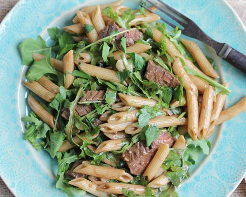

Pasta Arugula

Ingredients You'll Need:
- 1lb New York Strip Steak
- 1t Herbs de Provence
- 1 Garlic Clove, minced
- 3/4c Extra-Virgin Olive Oil + 3 Tablespoons
- 1lb Penne Pasta
- 1/4c Balsamic Vinegar
- 2T Dijon Mustard
- 1/2t Salt
- 1/2t Freshly Ground Black Pepper
- 1/4c Chopped Fresh Basil Leaves
- 1/4c Chopped Fresh Parsley Leaves
- 2c Chopped Arugula
Instructions
- Season steak with salt and freshly ground pepper, herbs de Provence, and minced garlic.
- In a skillet, heat 3t olive oil over medium heat. Cook steak about 7min per side. Let meat rest for 5min, then thinly slice.
- Bring a large pot of salted water to a boil over high heat.
- Add the pasta and cook until tender but still firm to the bite, stirring occasionally, about 8 to 10 minutes.
- Drain pasta, reserving 1/4 cup of pasta water.
- In a small bowl, whisk together the balsamic vinegar, dijon mustard, 1/2t salt, 1/2t pepper, fresh herbs, and 3/4c olive oil.
- In a large bowl, toss the pasta with half of the dressing and the reserved pasta water.
- Add the arugula and steak, more dressing, and season with salt and freshly ground black pepper as needed.
- Enjoy!